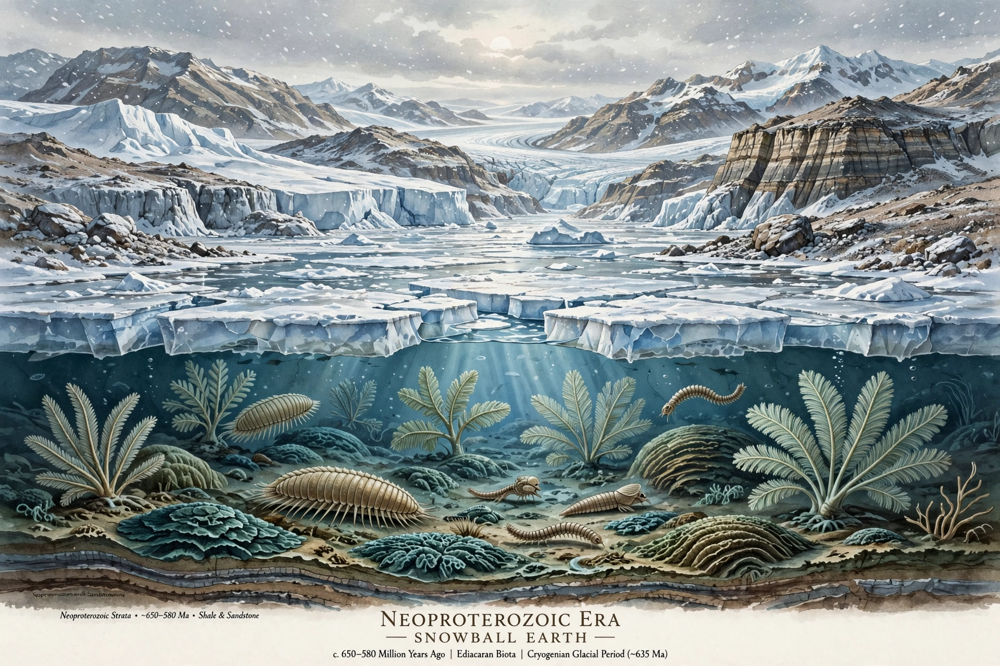

The Neoproterozoic Era is the last era of the Proterozoic Eon, spanning from 1 billion years ago to 538.8 million years ago, immediately before the Cambrian Period of the Phanerozoic. It is divided into the Tonian, Cryogenian and Ediacaran periods.
The supercontinent Rodinia formed and then broke up during this era. The Cryogenian saw severe glaciations — the Sturtian and Marinoan — that underpin the Snowball Earth hypothesis, in which ice may have reached the equator.
Simple multicellular life diversified. The Ediacaran biota — soft-bodied organisms such as Dickinsonia and Charnia — represent some of the earliest large, complex organisms. Acritarchs, algae and early animals, including sponges, appear in the fossil record. The era ends with the first appearance of abundant shelly fossils at the start of the Cambrian explosion.